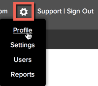
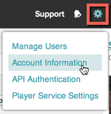

Get an Access Token for Player Management API
This tutorial guides you through the steps to get an access_token using curl. Your client_id and client_secret are used in getting an access_token, which provides the authorization to make a call to a particular Brightcove API. Be aware that the access token will expire every five minutes, so it is possible you will need to request a new token near that interval. Details how to do so appear in this document.
If you haven't yet looked at the OAuth Overview, it would be a good idea to look at it before proceeding.
Note: The steps in the document involve curl and other command-line tools that are native to Mac and Linux systems, but not part of the Windows operating system. If you are on Windows, you can get these tools by installing cygwin. During the install you will be prompted for packages to install. Open the Net package, then check the curl option and then finish the installation. Once you have done this you will be able to follow the Quick Start to Player Management successfully as written using the cygwin command line. Tools are available to run curl at the normal Windows command line, but not detailed in this document.
Steps
Get your BC_TOKEN and account number
You will need to login to Studio to get your BC_TOKEN.
- Login to Studio as you normally do.
- You need your account number, which you can get by going to your account profile in Studio:
  - With any page in Studio open, open the developer tools for the browser, go to the Console, and paste in the following code:
var cookiesArray = document.cookie.split(";"), cookiesObj = {}, i, tmpArray = []; for (i = 0; i < cookiesArray.length; i++) { tmpArray = cookiesArray[i].split("="); cookiesObj[tmpArray[0].replace(/\s/g, "")] = tmpArray[1]; } window.prompt("BC_TOKEN:", cookiesObj.BC_TOKEN);and press return.
- You should see a prompt appear that contains your
BC_TOKEN:
- If you have your BC_TOKEN, go on to the Get client credentials section; if for some reason you did not get your BC_TOKEN using the previous steps, just go to the Console, type
document.cookies, and press return. - All cookies for the page will be returned in a semi-colon-separated list. Find the BC_TOKEN cookie in the list, and copy the value:

Get client_credentials
Now you are ready to make the call to the OAuth service to retrieve client credentials. you have to specify a client application name that you are requesting credentials for - the name is arbitrary, intended to help you keep track of what the credentials are for - and here you will just use "PlayerMgmtClient." You also have to specify the scope of the operations you want access to, and here you will use both video-cloud/player/all and video-cloud/video/read).
- At a command line and after inserting your token and account ID in the statement, enter the following curl command and press Return:
curl \ --include \ --header "Authorization: BC_TOKEN YOUR_BC_TOKEN" \ --data 'name=PlayerMgmtClient&maximum_scope=[{ "identity": { "type": "video-cloud-account", "account-id": YOUR_ACCOUNT_ID }, "operations": [ "video-cloud/player/all", "video-cloud/video/read" ] }]' \ https://oauth.brightcove.com/v3/client_credentials - The response should look like this (formatting added):
{ "client_secret":"HHxp9xn0yxMqktLEG2DhzjYB4g6AN2cl02KudMvfK-3dT6JRtiR1tUZ7LiwtHI5vqo4VT7LuD6tM4c0llEw2Rw", "issued_at":"2014-08-11T17:37:24Z", "name":"AnalyticsClient", "redirect_url":null, "description_html":"My analytics app", "issued_to":"your email address", "client_id":"9309bb5d-90fb-4d3a-aba4-1795dd5fa0b8", "maximum_scope":[{ "identity":{"type":"video-cloud-account", "account-id":57838016001}, "operations":["video-cloud/analytics/read"] }], "trusted":null, "type":"credential", "description":"My analytics app", "expires_at":null, "revoked":null, "name_html":"AnalyticsClient", "issued_user":53255203001 } - Create environment variables to hold your credential values.
- To obtain your access token use the following curl statement.
- Be sure you response appears as follows (formatting added and access token truncated):
- Create environment variables to hold your access token, which you can copy from previous curl response.
export CLEINT_ID=YourClientIDexport CLIENT_SECRET=YourClientSecretGet access_token
curl \
--silent \
--user $CLIENT_ID:$CLIENT_SECRET \
--header "Content-Type: application/x-www-form-urlencoded" \
--data "grant_type=client_credentials" \
https://oauth.brightcove.com/v3/access_token{
"access_token": "AIwLsNg2UxkI7BA5p9r7K9oRMQ_....",
"token_type": "Bearer",
"expires_in": 300
}export ACCESS_TOKEN=YourAccessTokenNote: The access token will expire in 5 minutes. If you still need the token you need to re-use the last curl statement and assign the new access token to your ACCESS_TOKEN environment variable.